記事・リンクを検索
⌘K
ソフトを問わず、背景・環境制作に関するチュートリアルやリファレンスをまとめています。Houdini以外の事例も含む、上位互換のまとめページです。
110 件のポストを収録 · 最終更新: 2026-08-28
Spade&Co. 木川裕太氏による個人制作「Island」の技術解説記事。
Houdiniを用いたモデリングからレンダリングまでの背景制作ワークフローを体系的に学べるコース。

3D Environment Artistの四维惰性氏による記事「Rock and Stone Concept」。長年の経験に基づく岩のスカルプトアプローチを、シルエット・バランス・構図の観点から詳しく解説している。

Houdini内でプロシージャルに植生を生成できるツールキット「Natsura」。インポート/エクスポートの手間がなく高品質で、いわば「SpeedTreeのHoudini完結版」だとしている。KTT（Gaea相当）同様、Houdini内で完結するツールが増えている傾向にも触れている。

Naughty DogのSenior Environment Artistによるウェブサイト。UEなどの無料チュートリアルが見られるほか、Gnomon Workshopでも2つのチュートリアルを公開している。

Blenderを用いてセミプロシージャルに制作された背景作品「Port Town」の制作手法を、動画クリップ付きで解説するブレイクダウン。

『アバター 伝説の少年アン』をテーマにした複数の作品がArtStationで公開されていること。

ILMのSenior GeneralistであるSteffen Hampel氏による最新チュートリアル「Gotham - Full CG Breakdown」（CG Lounge）。

Samuel Krug氏によるチュートリアル「How I Created a Massive Coastal Mountain Scene in 3D」。技術的な側面だけでなく、書籍の描写を基にした再現や試行錯誤の過程も見られる点をおすすめしている。

Samuel Krug氏による、細部までディテールが詰め込まれた高品質な作品。ArtStationやInstagramでの最新作フォローを勧めている。

道路建設のために切り崩された崖と、自然な崖との違いについて解説するKevin Baker氏の記事。
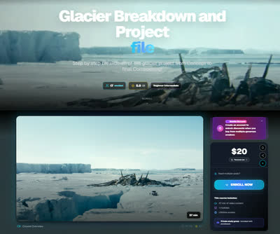
William Fiorentini氏による最新チュートリアル「Glacier Breakdown and Project file」がCG Loungeで公開されたこと。

ILMやDNEGでの勤務経験を持つSteven Corman氏が、Double Jump Academyで新しい背景制作チュートリアル「Advanced Matte Painting」をリリースしたこと。使用ソフトはHoudini、Maya、Gaea、Nuke、Photoshop。

実地形生成HDAの正式リリース。アメリカ国内では1m/pixelまたは10m/pixel、世界中では30m/pixelの解像度で地形を生成できる。SplatmapsはMeta SAM AIかカスタムのPython HDAで生成できる。

HoudiniとUE5を使って精緻な蓮（Lotus）のシーンを制作した過程を解説する80lvの記事。ArtStationにも制作ブレイクダウンが公開されている。
雲の表現が印象的な作品を集めた分析（毎日作品分析Day27）。
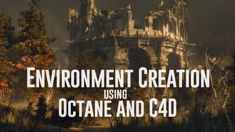
Cinema 4DとOctaneを使った背景制作チュートリアル「Environment Creation using Octane and Cinema 4D」。Houdiniのプロシージャル技術などを除けば、ツールに依存しない学びが多いという考えも添えている。

背景制作において広さを感じさせるスケール感の演出についての分析（毎日作品分析Day25）。単純に広い空間にスケール比較用の人物などを置くだけでは十分ではないという考察から始まっている。

岡崎昇平氏による、地形生成以外のHeight Fieldの変わった使い方を紹介する記事。Height Fieldが軽量でUVも扱いやすく、booleanのshatterに適しているという点が勉強になった。

大規模な背景の中にワンポイントで赤を入れることで主役を際立たせる手法についての分析（毎日作品分析Day18）。赤という色自体が、ワンポイントでも強さを感じさせる効果があるという気づきが記されている。

UbisoftやEAで勤務経験のあるEnvironment Concept Artistによるチュートリアル「The Lost Soldier - Environment Concept Design」（Wingfox）。BlenderとPhotoshopを使い、主にデザイン面にフォーカスした内容。
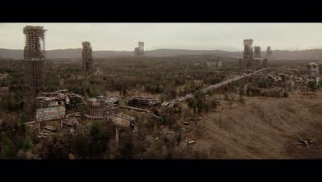
Steffen Hampel氏による『Fallout』のファンアート最新作。レンダリングがくっきりしていて美しくリアルだと評している。

Matt Barker氏による、リファレンス写真からHoudiniでScatterする手法。写真をカメラプロジェクションし、そこにScatterして写真の色をポイントに持たせ、木のタイプに応じてポイントをソートするという3ステップの流れが解説されている。

Darek Zabrocki氏の作品「Windmill Town」（毎日作品分析Day4_2）。物量・クオリティともに圧倒的だという気づきが記されている。

『アサシンクリード シャドウズ』で使用された、2Dマスクから3Dモデルを生成するHDA「Procedural Rock Wall Tool」。写真から岩壁のマスクを作り、Houdiniでディテールを追加後、Zbrushでさらにディテールを足すワークフローが採用されていたと推測している。
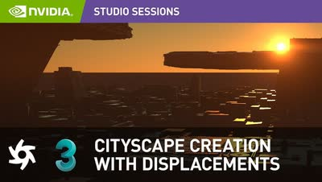
Darek Zabrocki氏による、Octaneと3ds Maxでディスプレイスメントを活用した都市景観制作チュートリアル。

木の葉のレンダリング時間を、Geometry（16秒）、Stencil（27秒）、Opacity/Texture（2分35秒）の3手法で比較検証。Solarisでは、Scatterする場合はAlphaでモデルをカットアウトし、それ以外はOpacityなしで使うのが最適ではないかと考察している。
作品「Gate to the Afterlife」の制作全工程を追った動画。
リアルタイムでオブジェクト同士のインタラクションを計算するUnreal Engine用プラグイン「Advanced Environment Interaction」。

崖に草を生やすマスクを作成する際、Normalマスクだけでなく AOマスクも併用することで、よりリアルな結果が得られるというTips。

Megascansなどのスキャンアセットを組み合わせることで、低コストでリアルな岩や崖を制作できる手法（参考動画つき）。
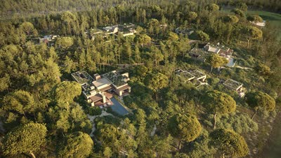
大規模な環境制作をマスターするためのTipsをまとめた記事。
3ds MaxのForest Packを開発するITOO SOFTが公開している背景制作のTips。使用ソフトが異なっても根本の考え方は共通するため勉強になるとしている。
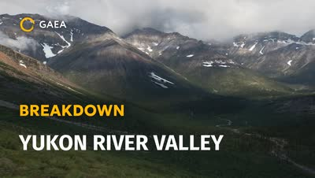
Gaeaを使った地形制作を詳しく解説するチュートリアル「Gaea Breakdown: Yukon River Valley」。ここまで詳しい解説は珍しいとしている。
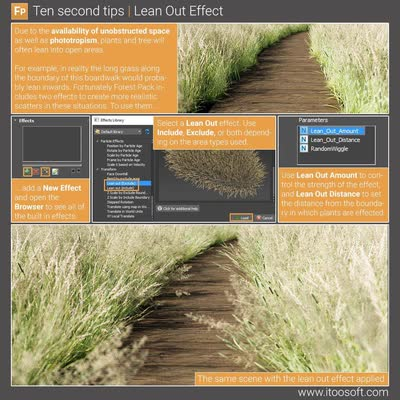
植物が空間の空いている方向に伸びる性質をCGで表現することで、よりリアリティが増すというテクニック。

Naughty DogのPrincipal Environment Artistによる、『The Last of Us Part I』の制作ブレイクダウン（ArtStation）。
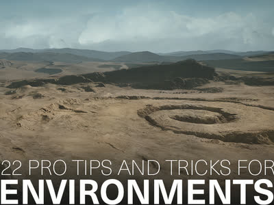
環境アーティスト向けの22のプロTips集をまとめた記事。
MPCによる、DMP（デジタルマットペイント）を使わずにフルCG環境を制作した手法についての論文。映画『ライオン・キング』（2019）の制作事例が題材。
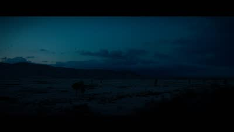
Steffen Hampel氏の新しいチュートリアル「Sicario - Full CG Breakdown」がCG Loungeで公開されたこと。
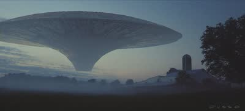
高品質な作品を多く手掛けるDusso氏のウェブサイト。
映画『アバター』や『アリータ：バトル・エンジェル』のプロダクションデザイナーを務めたDylan Cole氏のウェブサイト「Dylan Cole Studio」。

Jakub Bazyluk氏による都市デザイン作品「Circles」の制作ブレイクダウン。
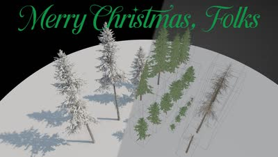
無料で入手できる22個の木のアセット。

PixarのEnvironment Leadによる、USDについて解説した動画「USD Building Asset Pipelines」。

背景作品で高い評価を得ているMarek Denko氏のウェブサイトとArtStation。

松の木を生成できるHoudini用HDA「Pine Tree Generator」が年内にリリース予定である。

HoudiniのHeightfieldの面白い活用方法を解説するチュートリアル「Hacking Heightfields」。
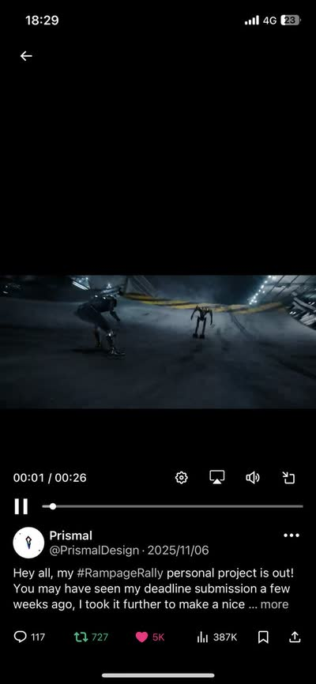
ILMのJr. Generalistによる作品制作者のYouTubeチャンネル。

Houdiniを使ってプロシージャルに道路網を生成するチュートリアル。
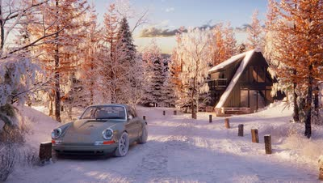
Steffen Hampel氏が雪の道路シーンを制作したプロセスを解説した記事「Sunny winter Road scene using V-ray & Nuke」。

Blenderで制作されたヨーロッパの都市景観作品のプロセスを解説する80lvの記事。スキャンアセットからパーツごとのアセット制作方法などが学べる。

幻想的な世界の環境制作を学べるコース「3D Environments: Create Otherworldly Fantasy Lands」。最終レンダリングはClarisseだが、Maya・Houdini・Nukeについても学べる内容。

Houdiniを使って映画『君の名は。』のPVの背景をフル3Dで再現した制作過程を解説するnote記事。まだ全部読めていないが、試行錯誤の過程が勉強になるとしている。

スクウェア・エニックスによる、Houdini×UE4を使ったプロシージャル背景制作の記事「Procedural Environment『1,000の和室』」。

『Hogwarts Legacy』や『Diablo』に携わったJunliang Zhang氏による、HoudiniとUE4を組み合わせたプロシージャル環境制作の記事。

モデリングから全工程をカバーする背景制作チュートリアル「Arch Masterclass I: Mastering Environments with Vray」。

MayaとArnold向けのアセットライブラリプラグイン「Asset_Ingester」。

ILMのAssociate VFX Supervisor、Falk Boje氏による背景制作チュートリアル「How to Create a Sci-Fi Environment in 3ds Max」。作業自体はシンプルながら高品質な結果が得られる。

Falk Boje氏のYouTubeチャンネル。

3ds Max背景制作チュートリアル「Japanese River」制作者による、他の作品。

3ds Maxを使った背景制作のチュートリアル「Japanese River」。詳細な解説のため、3ds Maxを使っていなくても学べる内容が多いとしている。

ゲーム環境における汚れや風化の表現について解説する動画「Weathering & Grime in Game Environments」。物理法則に基づいたシェーディングを学べる内容。
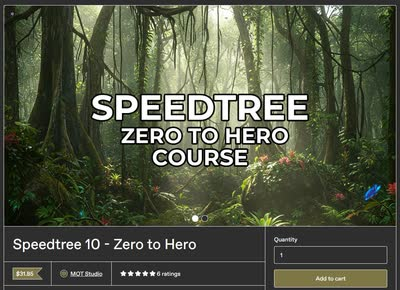
SpeedTreeをゼロから解説するチュートリアル「Speedtree 10 - Zero to Hero」。SpeedTreeのチュートリアルは少ないため貴重だとしている。

地形の3Dスキャンモデルを購入できるサイト「The Terrain Domain」。Megascansにはないような地形も多く扱っている。

Steven Croman氏のArtStationページ。クオリティの高い背景作品が多く掲載されている。

ILMやAxis Studioに在籍していたSteven Croman氏による3D Matte Paintingのチュートリアル。DMP（デジタルマットペイント）のチュートリアルは少ないため貴重だとしている。

作品「Whispers of the Forgotten Temple」の制作プロセスを解説したブレイクダウン。Houdiniが様々な箇所で使用されている。

Yen Chen氏のArtStationページ。クオリティの高い背景作品が多く掲載されている。

ILMのGeneralist、Yen Chen氏が自身の作品制作に使用したHDA「CH Tools」を無料公開していること。Scatterに重要な機能が多く含まれている。

Ivy Tamingプラグインの使い方を、Adrien Lambert氏が丁寧に解説した動画。

HoudiniでIvy（ツタ）を生成できるHDA「Ivy Taming 1.1」。『The Last of Us』などハリウッドのプロダクションでも使用されている。
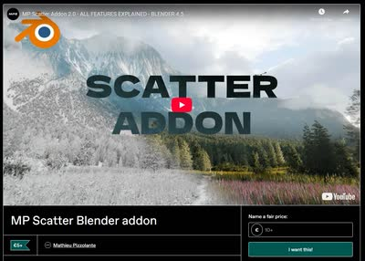
LODやカメラカリングなど多くの機能を持つ、Blender用のScatterアドオン「MP Scatter」。

個人制作でSolarisを使いたい人向けのチュートリアル「LOPs for Solo Artists」。

Adrien Lambert氏による、マスクを作成できるHoudini用HDA「AL MASKBUILDER」。ScatterやShadingで使えるマスク作成機能が詰まっている。

靴やカメレオンなどをテーマにしたテクスチャリングのチュートリアル。Substance Painterの使い方が参考になり、背景制作にも活かせるとしている。

HoudiniのInstanceについて体系的に理解するのに役立った記事「An Even Longer-Winded Guide to Instancing in Houdini」。

今川雅史氏による都市の背景制作チュートリアル「Cinematic Shot Design | Modern city」。カメラシェイクを加える方法にも触れられている。

Samuel A Krug氏による地形生成HDA「KTT for Houdini」。従来のHoudiniやGaeaでは難しい表現が可能になるとしている。

Anthony Eftekhari氏による3D Matte Paintingのチュートリアル。主にMaya、3ds Max、Photoshopを使用する。

HoudiniでのLattice操作を簡単にするHDA「Lattice_B for Houdini」。

Blizzard EntertainmentのSenior Art Director、Anthony Eftekhari氏による構図とデザインについての無料チュートリアル「Composition & Staging Series」。

Houdini Solaris向けのライティングテンプレート。単一ショット用だけでなく複数ショット用のテンプレートもある。

OpacityMapを使ってメッシュをカットアウトできるプラグイン「YL Atlas Cutter」。

MegascansのアセットをUSDに変換し、LookDevまで行えるHoudini用のHDAツール。

安藤恵美氏によるUSD/Solarisについての講演動画。2018年のものだが、USDの基本概念の理解が深まる内容。

ILMロンドン所属のGeneralist、Yen Chen氏による作品の制作プロセス。使用ソフトはHoudini、Nuke、および（現在は使用できない）Clarisse。
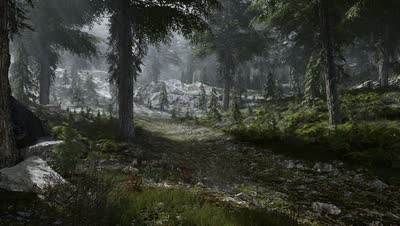
80lvに掲載された、『The Witcher 3』に着想を得た雪景色シーンの制作記事。大規模な自然系背景制作に役立つTipsがまとめられており、使用ソフトはUnreal Engineがメイン。
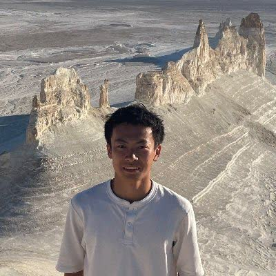
SyntaXcg氏がHoudiniで2つのシーンを制作するプロセスを解説したチュートリアル。スキャッターやプロシージャルなセットアップ、Substance Painterを使った水面のテクスチャリングなど、それぞれ異なるポイントにフォーカスしている。
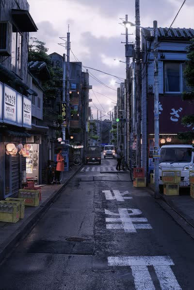
Steffen Hampel氏による、「Japanese Alley」という作品を制作するWingfoxのチュートリアル。MayaとV-Rayがメインに使用されている。

SpeedTreeでアニメーションやシミュレーションを行えるプラグイン。

HoudiniでMegascansのAtlas機能を使って葉っぱのアセットを作成する手法。この手法はゲーム『アサシンクリード』でも使用されている。Megascansは葉っぱ系アセットの種類が少ないため、こうしたテクニックが役立つとしている。
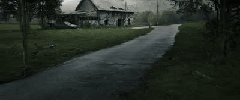
Blender、RealityScan、UE5、Nukeを使ったシーン制作のチュートリアル。Houdiniとは異なるワークフローだが、背景制作に通じる部分が多いとしている。
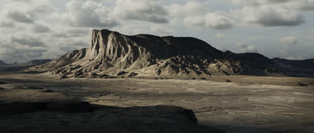
背景制作に定評のあるBaptiste氏が制作した作品のBlenderファイル。
The Rookies 2024優勝者であるAntoine Barbannaud氏によるチュートリアル。複数のソフトを組み合わせた高品質な内容で、背景制作のワークフロー学習におすすめとしている。

ILMのJunior GeneralistであるLucas Piazzini氏のXアカウント。ArtStationでの詳しい背景制作解説に加え、コンテスト「Rampage Rally」で3位に入賞した作品も紹介されている。

Double Jump Academyで公開されている、William氏によるHoudiniを使った背景制作のチュートリアル「Epic Environments」と「Environments for Beginners」。
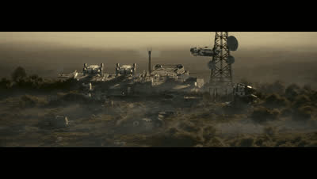
ILMのGeneralist William Fiorentini氏によるチュートリアル。背景制作のTipsが詰まっており、fogアセットも付属する。

HoudiniのLOPsとSolarisについて詳しくまとめられた英語記事（cgwiki）。
1枚の画像の色を別の画像に転送できるBlenderのアドオン。背景制作で欲しいテクスチャがない際に役立つとしている。

Adrien Lambert氏のSolarisチュートリアルにInstancerを使う内容が追加され、Part4まで公開されている。

同じチュートリアルの追加パートについて、SpeedTreeのLookDevからScatterまでをカバーしている点。

Blizzard Entertainment所属のAdrien Lambert氏による、Houdini SolarisでのUSD・環境制作ワークフローを学べるサブスクリプション形式のチュートリアル。月額約400円で視聴可能。

HDR Converter（Windows専用）とHDRI Manager for 3ds Max, Maya and Houdiniという、2つの無料HDRI関連プラグイン。

80lvに掲載された記事と、RebelwayでEnvironment Creation in Houdiniコースを担当するJames Hodgart氏。
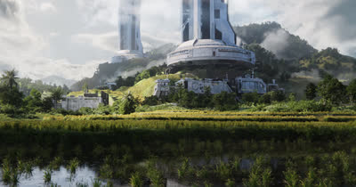
映画『The Creator』に着想を得たシーンの地形デザインについて解説する80lvの記事。
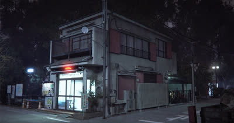
Megascansを使ってフォトリアルな3Dシーンを制作する手法を解説した80lvの記事。

Houdiniを使った環境アート制作について、穏やかな漁村シーンのセットアップを例に解説する80lvの記事。

大規模な2D環境をHoudiniとNukeを使って3Dで再現する手法を解説した80lvの記事。

80lvに掲載された、Houdiniを使った背景制作ワークフローの記事。地形生成から建物配置、USDでのコンポジションまで解説されている。

背景制作に欠かせないScatterツール。木川氏の記事を基に、いくつか機能を追加して作成した。詳細はNotionページにまとめられている。